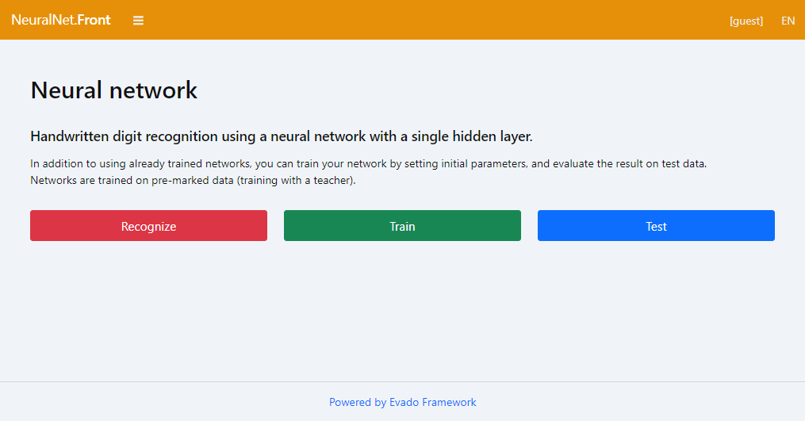

Вступление
Приложение Neural Net - это обучение, тестирование и использование нейронных сетей для распознавания рукописных цифр. Приложение написано на современном JavaScript и имеет открытый исходный код. Построено на декларативном фреймворке Evado.
Готовое для запуска приложение доступно в публичном хранилище.